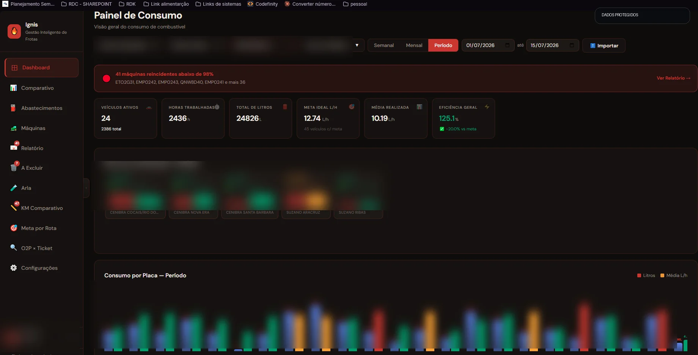
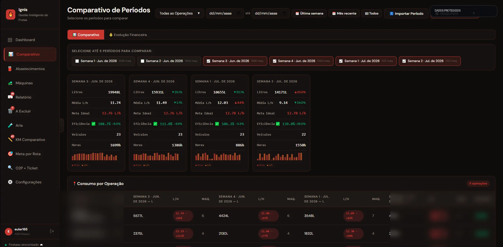
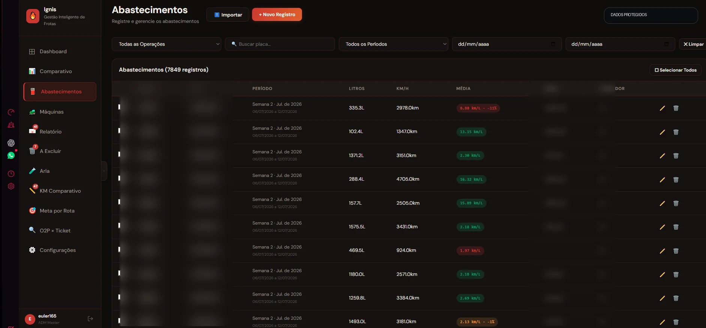
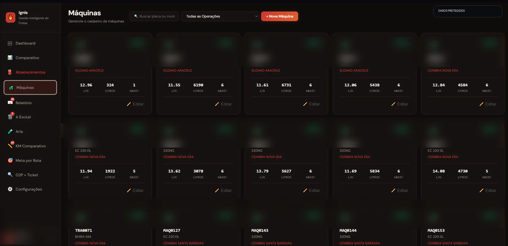
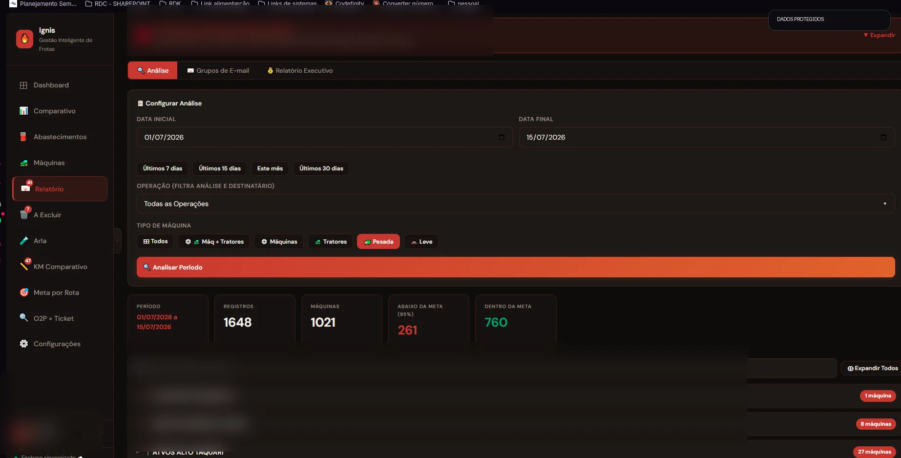
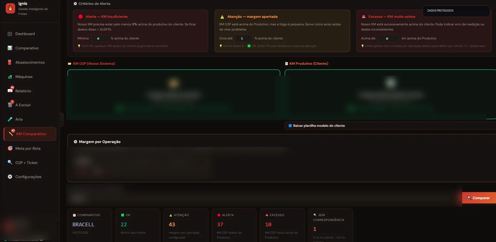

Centralização
Indicadores, cadastros, abastecimentos e análises em um único ambiente.
Uma plataforma completa para importar, tratar e transformar dados de abastecimento e operação em indicadores, alertas, comparativos e relatórios prontos para tomada de decisão.

O projeto nasceu para reduzir análises manuais, consolidar informações espalhadas em planilhas e permitir que gestores identifiquem rapidamente equipamentos abaixo da meta, reincidências e diferenças entre fontes de dados.
O resultado é um sistema que organiza o processo inteiro: importação, validação, análise, comparação, geração de alertas e comunicação dos resultados.
Indicadores, cadastros, abastecimentos e análises em um único ambiente.
Tratamento de arquivos, cálculos, alertas e relatórios sem trabalho repetitivo.
Informação visual e objetiva para agir antes que o desvio vire prejuízo.
As telas abaixo são do produto real. Nomes de empresas, operações, usuários, placas e informações sensíveis foram ocultados.
Visão geral de eficiência, consumo, metas, reincidências e desempenho por operação e equipamento.

Comparação de vários períodos simultaneamente, com evolução de indicadores e desempenho por operação.

Consulta, importação, filtros, edição e rastreabilidade dos registros utilizados nas análises.

Gestão de máquinas, modelos, operações, metas individuais, consumo e situação de cada ativo.

Configuração por período e tipo de frota, agrupamento por operação e preparação de relatórios executivos.

Importação de duas fontes, regras de tolerância e classificação automática de divergências e exceções.